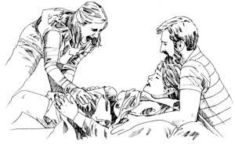

There's a growing need for compassionate, skilled women to attend natural childbirths.
Although the modern world is becoming increasingly oriented toward technology, one of the world's oldest-and most down-to-earth-professions is currently making a comeback . . . midwifery. Today's midwives are teaching childbirth classes, giving prenatal and postpartum care, and, best of all, delivering more and more babies in homes and hospitals.
If you've ever considered becoming a midwife, you may have wondered just where to begin-since it can be difficult to find information on the subject! In the same vein, many pregnant women wish to be attended by a midwife but cannot find one. In order to address both of those problems, this article will look at what it takes to become a midwife . . . what possibilities for work exist . . . and how you may be able to locate such a birth attendant.
Most women who become midwives feel they're answering a calling: They have a strong belief in the basic normalcy of childbirth and a feeling that there is a certain rightness in a woman attending another woman in labor. (EDITOR'S NOTE: We should point out, however, that there are practicing male midwives.) Furthermore, because this occupation is still struggling for acceptance in our coun try (see the sidebar "But Can You Become a Midwife?"), most midwives also have a streak of stubbornness in their characters.
Take the above qualities, add caring, empathy, scholastic ability, and being able to think clearly at 2 A.M., and you have a description of a "typical" midwife. And she certainly isn't in it for the money! Probably the most that a certified nurse-midwife could earn would be around $25,000 to $35,000 . . . while a lay midwife making $12,000 a year would be doing well indeed.
After consumer awareness about childbirth issues increased in the 1970s, two kinds of midwives emerged in America: lay midwives, who are mostly self-taught and involved in home births; and certified nurse-midwives (C.N.M.'s), who have been through credentialed nursing and birthing programs and usually work in hospitals or birth centers.
A certified nurse-midwife must have her R.N. degree (the majority have a bachelor of science in nursing) and have completed either a basic midwife certification program or the more elite two-year master's degree program. She can then work in a hospital or a birth center, or go into independent practice-although her choices may be limited by state law and by her ability (or inability) to get delivery privileges at a hospital.
A C.N.M. will usually have clearly defined medical privileges, such as the right to do an episiotomy (surgically enlarging the birth opening), suture, give analgesic drugs, and prescribe birth control. In some states, though, she may be required to practice directly under a physician's supervision, often to the point of having to have a physician present during each delivery.
Lay midwives are self-taught, have served an apprenticeship under an experienced birth attendant, or have attended one of the few schools for lay midwives. Sometimes lay midwives have a combination of all three backgrounds . . . and quite a few are R.N.'s who became interested in home birth.
An advantage to apprenticeship training is that an experienced lay midwife can pass on nonmedical techniques and skills which come from extensive practice. (Using herbs to control bleeding would be one example of such know-how.) However, whatever weaknesses in skills a senior midwife has will likely be passed on, as well.
The schools for lay midwifery can provide a more thorough theoretical and clinical experience than can apprenticeship alone. They also provide the advantage of qualifying their graduates to take formal exams and be licensed in the school's home state. But a prospective student should be prepared for a time-consuming, highly stressful learning experience of from one to three years. A few of the schools, including the Maternity Center (1119 E. San Antonio St., El Paso, TX 79901), provide extensive clinical and birth experience. In others, such as the Seattle Midwifery School (2524 16th Ave. South, Seattle, WA 98144) and the Midwifery Training Institute (P.O. Box 26174, Albuquerque, NM 87108), the academic portion of the program is strong, but the student must arrange her own clinical experience and apprenticeship.
Lay midwives usually work without a physician's supervision (although most have some sort of backup and consultation arrangement), and in some ways this has allowed them to develop with more freedom as midwives. But with the extra freedom come additional burdens: Home births remain controversial, physicians who work with lay attendants may be harassed by other doctors, and a lay midwife is often much more vulnerable legally than a C.N.M. is. And even if licensed, midwives may be restricted from performing such technical procedures as episiotomies and suturing.
State licensing is a boon to new midwives entering the profession. While it usually entails having to attend a school of midwifery, it can also ensure the legal right to practice and often provides greater acceptance among members of the medical community. (Washington, Arizona, New Mexico, Texas, Florida, South Carolina, and New Hampshire all license lay midwives.) Sadly, licensing procedures often leave out skilled, currently practicing midwives who are unable to move away to attend a school. However, such regulation is clearly the wave of the future; many midwives feel there will be a national licensing requirement in the next ten to fifteen years.
All in all-and despite areas of serious repression-there is an increasing demand for midwives in America. Consumers are attracted to the lower cost, increased attention to the patient, and natural orientation of today's midwives. For the midwife herself, life involves enduring late-night deliveries, missing family dinners, and wearing a beeper . . . in exchange for sharing closeness with a childbearing family, giving support to a laboring woman, and-best of all-seeing the look on a peacefully sleeping newborn's face.
EDITOR'S NOTE: For a good discussion of the advantages and safety of home birth and the problems many advocates are having, read "Home Birth Under Siege," the Plowboy Interview with Marian Tompson in MOTHER NO. 77.
Although certified nurse-midwives are legal in most parts of the country, the status of lay midwives is controversial and varies greatly from state to state. Some states clearly allow lay midwives to attend home births . . . some have a policy that is not clearly defined (it may be illegal in theory but not repressed much in practice-or even the opposite) . . . some have reasonable-and some restrictive-licensing procedures for lay midwives ... and some ban midwifery altogether. In several states, midwives and even doctors attending home births have undergone severe legal prosecution. And a number of states are currently in the process of changing-either liberalizing or tightening-their midwifery laws.
To give you a rough idea of your state's policies, MOTHER's staff has compiled the following-admittedly simplistic-list, dividing our country into states in which lay midwifery is currently accepted (either in statute or in practice) . . . ones where the status of midwifery is controversial (midwives in these states often practice covertly) . . . and states where lay midwifery is clearly prohibited.
The best guide for finding out the specifics of your own state and for locating contact people who can keep you up-to-date on current developments is Midwifery and the Law (listed in the "Access" sidebar).
ACCEPTED BY LAW OR IN PRACTICE
Alaska
Arizona
Arkansas
Florida
Idaho
Iowa
Kansas
Maine
Nebraska
Texas
Utah
Nevada
New Hampshire
New Mexico
North Dakota
Oklahoma
Oregon
South Carolina
South Dakota
TennesseeWashington
Wyoming
Vermont
CONTROVERSIAL
Alabama
California
Connecticut
Georgia
Illinois
Kentucky
Massachusetts
Minnesota
Mississippi
Montana
New Jersey
Rhode Island
Virginia
Wisconsin
Michigan
CLEARLY ILLEGAL
Colorado
Delaware
Hawaii
Indiana
Louisiana
Maryland
Missouri
New York
North Carolina
Ohio
Pennsylvania
West Virginia
|
 ADAPTED FROM PHOTO BY LYN JONES |
|
|